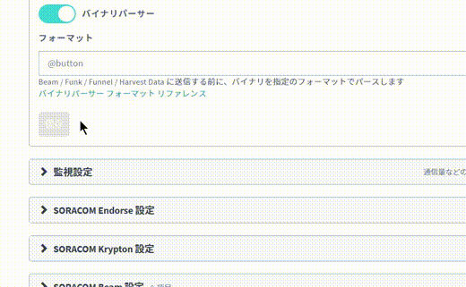
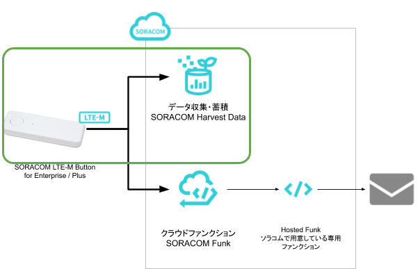
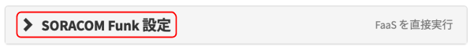
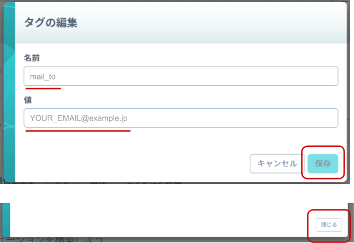

IoTの「モノ・ネットワーク・クラウド」を手早く体験いただけるワークショップです。
SORACOM LTE-M Button と SORACOM サービスの活用で、最小限かつ実用性のある IoT システムの構築を行います。

利用するデバイスやサービスの紹介
SORACOM LTE-M Button
SORACOM LTE-M Button はボタン型 IoT デバイスで、用途や機能で3種類のモデルがあります。ここでは共通部分を解説します。
ボタンは押し方に応じて3種類の情報をクラウドに送信できます。通信には省電力セルラー通信「LTE-M」を用いており、また、セルラー通信に欠かせない SIM は「eSIM」として内蔵していることから、通信設定が済んでいる状態ですぐに利用開始できます。電源は交換可能な単４電池２本で、小型で持ち運びも可能です。
SORACOM Harvest
IoT デバイスからのデータの収集や蓄積、およびファイルを保存するサービスが SORACOM Harvest(ソラコム ハーベスト) です。
IoT データの蓄積における課題
データの収集や蓄積を行いたい場合、一般的にはクラウドサービスの契約や設定といった準備をすることで実現できます。
特に IoT ではデータが重要であるため、デバイスからのデータをいち早く確認したいという要望に対し、利用するクラウドが決まっていない、決まっているが準備ができていないために、開発スピードが停滞する事があります。
SORACOM Harvest の利点
SORACOM Harvest は SORACOM の上で利用できるデータ収集・蓄積サービスです。SORACOM のアカウントを持っている時点で利用いただけます。利用はオンライン上で ON/OFF でき、契約は1日単位となっていることから、開発時の必要な時に必要なだけ使うことができます。
SORACOM Harvest は蓄積するデータの種類によって2種類の機能があります。IoT デバイスからのデータの収集・蓄積対応しているのが SORACOM Harvest Data、画像ファイルやログファイルといったファイルに対応しているのが SORACOM Harvest Files です。
SORACOM Funk
FaaS(Function as a Service)上の関数を直接実行し、結果の値を得ることができるサービスが SORACOM Funk(ソラコム ファンク) です。
クラウドのサービス間をつなげることに用いられる FaaS ですが、 IoT においても FaaS の活用は有効です。特に IoT デバイスから FaaS を利用することで「ロジックの更新性向上」「デバイスの省電力化」「デバイス単体では不可能な機能を実現」と3つの効果が得られます。
利点 1: ロジックの更新性向上
IoT デバイスから FaaS を呼び出せるようになると、本来 IoT デバイス上で実装していたプログラムの多くの部分を FaaS に移設できます。例えばセンサーからのデータを変換する複雑な「関数」を FaaS 上で実装し、IoT デバイスからはその「関数」を呼び出すだけとなります。
これにより、関数内のロジックに変更が必要となった際、従来であれば現場の IoT デバイスまで赴いてデバイス内のプログラムの書き換えが必要でしたが、FaaS を呼び出す構成であればクラウド上の関数の書き換えで済みます。このように、現場に配置してしまった後でもプログラムの更新ができることから、システムを成長し続けることが容易となるわけです。
利点 2: 省電力化
AIや機械学習といった複雑なロジックの実行や、デバイスに直接接続されたストレージの読み書きは多くの電力を消費します。IoT デバイスが FaaS を通じてクラウド上の膨大な資源を利用できるようになると、消費電力の高い処理を FaaS へ移設することができることからデバイスの省電力化が期待できます。
一方、通信モジュール自体も電力消費をします。特に通信の頻度やデータサイズといった通信時間(= 通信モジュールが動作している時間)が消費電力に影響するため、FaaS とデバイス上の機能分担を考慮する必要があります。
利点 3: デバイス単体では困難な機能を実現
センサーの値を基に現場の作業者が持つスマートフォンへ通知する仕組みを考えた際、IoT デバイスから直接スマートフォンへ通知する仕組みを開発するのは現実的ではありません。そこで FaaS 経由でクラウドサービスを利用することで、デバイス単体では困難な機能を実現できます。
また、FaaS を経由することでデバイス上でのプロトコル実装が不要となるため、新たな機能への対応といったプラス面だけでなく、認証情報の期限といった運用に欠かせない部分もデバイス上から無くすことができることから、IoTデバイスとクラウドサービスの継続的な連携をしやすくします。
Hosted Funk について
SORACOM Funk は FaaS 上の関数を呼び出すサービスであるため、呼び出し先の関数を用意する必要があります。
本来、関数の作成にはクラウドサービスの契約と関数の作成作業が必要ですが、本ワークショップでは SORACOM Funk の体験を目的として「メール送信の専用関数」をソラコム側で準備(Hosted)しています。これが「Hosted Funk」です。
ここまで確認したら
次に進みます。
本ワークショップはスプレッドシートによる「達成表」を利用します。各自の進行状況や運営からのお伝えしたい事がまとまっているため、必ず使用してください。
記入の方法
自分の氏名（もしくは受講者番号）の横に、達成したステップに応じて "OK" を記入します。
※ その隣は任意ですが、セミナーセッションの感想やワークショップへの意気込み、試してみたい事などご記入いただけると、フォローしやすくなるのでご記入いただければありがたいです！
これ以降、テキストの「ステップ」が終了したら達成表に記入していきましょう。
ここまで達成したら
「達成表」に "OK" の記入をして次に進みます。
本コンテンツを行うためには以下のものをご用意ください。
ハードウェア
品名 | 数量 | 価格 | 購入先 | 備考 |
SORACOM LTE-M Button for Enterprise | 1 | 5,980円 | SORACOM LTE-M Button Plus でも代用可能です。 ※ SORACOM LTE-M Button powered by AWS は対象外となります | |
パソコン | 1 | ― | ― | インターネット接続が可能でサイトへの接続が自由であること。 Google Chrome 等の最新ブラウザーが利用可能な事。 |
※ 金額はコンテンツ作成時となります。税抜き・送料別です。
その他必要なもの
必要なもの | 費用 | 作成方法など |
SORACOM アカウント | 無料※ |
※ 貸し出しの方は、当社から連絡済みの |
メールアドレス | ― | 通知先に利用します。 ※ SORACOM アカウント作成時に利用したメールアドレスと |
※ アカウント作成・維持の費用の料金です。
ここまで達成したら
「達成表」に "OK" の記入をして次に進みます。
SORACOM のサービスを利用するためには、SORACOM ユーザーコンソールへログインするところからは始まります。
ワークショップで利用するアカウント情報を準備する
本ワークショップで利用するアカウント情報を準備します。
【ケース 1】ソラコムから貸し出されたアカウント情報を利用する場合
「オペレータ ID」「ユーザー名」「パスワード」の3つの情報が揃っているか確認します。次に、SAM ユーザーとしてログインを開き、「オペレータ ID」「ユーザー名」「パスワード」の3つの情報を入力して［ログイン］をクリックします。
【ケース 2】ご自分のアカウント情報を利用する場合
SORACOM アカウントにログインからログインをします。
ログインが成功したら SORACOM LTE-M Button に紐づいている SIM を確認します
ここまで達成したら
「達成表」に "OK" の記入をして次に進みます。
SORACOM の IoT データ収集・蓄積サービス SORACOM Harvest Data を利用して、データの可視化を簡単に実現してみましょう。
まずはグループの作成と、作成したグループへ SIM を所属させる事から始めます。
SORACOM Harvest Data でデータの収集を行いたい SIM (SORACOM LTE-M Button) にチェックを付け、［操作］>［所属グループ変更］とクリックします。
「新しい所属グループ」のプルダウンボックスをクリックした後、［新しいグループを作成...］をクリックします。
"グループ作成" では、グループ名を入力して［グループ作成］をクリックします。
項目 | 例 | 備考 |
グループ名 |
| 自由に入力可能です。日本語も設定可能です。 |
新しい所属グループが先ほど作成したグループになっていることを確認したら［グループ変更］をクリックします。
自動的に SIM 管理画面に戻ります。
SIM の「グループ」に、先ほど作ったグループが設定されていることを確認してください。
以上で、グループの作成と所属の作業は完了です。
ここまで達成したら
「達成表」に "OK" の記入をして次に進みます。
グループに「バイナリ―パーサー機能」「簡易位置測位機能」「SORACOM Harvest Data」の3つの設定を行います。
SIM 管理画面から、SORACOM LTE-M Button に割り当てたグループ名をクリックします。
［SORACOM Air for Cellular 設定］をクリックして設定ができるように開きます。
「SORACOM Air for Cellular 設定」で以下のように設定します。
項目 | 設定値 | 備考 |
簡易位置測位機能 | ON | スイッチはクリックすることで OFF から ON に切り替えることができます。 |
バイナリ―パーサー設定 | ON | スイッチはクリックすることで OFF から ON に切り替えることができます。 |
バイナリ―パーサー設定 / フォーマット |
| 半角英数で入力してください。 |
最後に［保存］をクリックしてください。
同じページの中にある［SORACOM Harvest Data 設定］をクリックして設定ができるように開きます。
「SORACOM Harvest Data 設定」で以下のように設定します。
項目 | 設定値 | 備考 |
（スイッチ） | ON | スイッチはクリックすることで OFF から ON に切り替えることができます。 |

最後に［保存］をクリックしてください。その後表示される「SORACOM Harvest Data が有効になっています」のダイアログでは［OK］をクリックしてください。
以上で「バイナリ―パーサー機能」「簡易位置測位機能」「SORACOM Harvest Data」の3つの設定が完了しました。
すでに SORACOM LTE-M Button (の SIM)は、このグループに所属しているためこの時点から SORACOM LTE-M Button からのデータが SORACOM Harvest Data に表示されるようになります。
ここまで達成したら
「達成表」に "OK" の記入をして次に進みます。
SORACOM LTE-M Button からのデータが SORACOM Harvest Data に表示されることを確認してみましょう。
［Menu］>［SIM 管理］とクリックして SIM 管理画面を開きます。
SORACOM Harvest Data でデータの表示を行いたい SIM (SORACOM LTE-M Button) にチェックを付け、［操作］>［データを確認］とクリックします。
表示された画面で［自動更新］を ON にします。
この表示された画面が SORACOM Harvest Data の画面となります。
SORACOM LTE-M Button を押してみる
実際に SORACOM LTE-M Button を押してデータを確認してみましょう。ボタン部分を押下後、最終的に LED が緑色に点灯したらデータ送信成功です。
SORACOM LTE-M Button のデータが SORACOM Harvest Data に表示されていることが確認できます。
1件のデータが到着した様子
データテーブルを表示する
データはグラフだけでは無く、ページの下の方でデータテーブルとして表示されます。ここで具体的な値を確認できます。
地図を表示する
ピンマークをクリックすると表示が地図に切り替わります。これでデータ内の $metadata.lat と $metadata.lon を基にした位置を描画しています。
自動更新が ON になっていれば、SORACOM LTE-M Button を押した時点での位置が描画され、最終的には以下の様に活用できます。
※ 地図上の赤のラインは別途レタッチソフトで描画しています。
ここまでのおさらい
以上でボタンのデータをデータ収集・蓄積サービス「SORACOM Harvest Data」で確認できるようになりました。

ここまで達成したら
「達成表」に "OK" の記入をして次に進みます。
SORACOM LTE-M Button を押した時に、メールの通知を行えるように設定してみましょう。そのためには、クラウドファンクションアダプタ SORACOM Funk を利用します。
［Menu］>［SIM 管理］とクリックして SIM 管理画面を開きます。
SIM 管理画面から、SORACOM LTE-M Button に割り当てたグループ名をクリックします。
[SORACOM Funk 設定] をクリックして設定ができるように開きます。

「SORACOM Funk 設定」で以下のように設定します。
項目 | 設定値 | 備考 |
(スイッチ) | ON | スイッチはクリックすることで OFF から ON に切り替えることができます。 |
サービス | AWS Lambda | デフォルトで選択されています。 |
送信データ形式 | JSON | デフォルトで選択されています。 |
認証情報 | 認証情報を指定しない | デフォルトで選択されています。 |
関数の ARN |
| ― |
関数のARN
arn:aws:lambda:ap-northeast-1:762707677580:function:funk-button-email:prod
最後に [保存] を押します。
メールの送信先を設定します。
［Menu］>［SIM 管理］とクリックして SIM 管理画面を開きます。
ボタンの SIM を選択し、[ 詳細 ] を押して詳細画面を開きます。
SIM 詳細で ［タグ］ をクリックした後、［＋］ をクリックします。
"タグの編集" で以下のように設定します。
項目 | 設定値 | 備考 |
名前 |
| |
値 | (送信先メールアドレス) | 間違えないように気を付けてください |

最後に［保存］をクリックし、 "SIM 詳細" の［閉じる］をクリックします。これで準備は完了です。
SORACOM LTE-M Button を押してメールを送信する
SORACOM LTE-M Button を押すと設定したメールアドレスに、以下のようなメールが送信されます。
件名: ボタンクリック通知
ボタン 7MF6J01234567890 が SINGLE クリックされました
- バッテリー残量: 100 %
- 位置情報: 緯度,経度 = 35.67026205900455,139.74446296691895
--
以下の情報はメールテンプレートで {{event.xxx}} {{context.xxx}} {{tags.xxx}} {{etc.xxx}} のように参照できます
event:
clickType: 1
clickTypeName: "SINGLE"
BatteryLevel: 1
BatteryLevelPercent: 100
context:
imsi: 440527777777777
imei: 359567777777777
operatorId: "OP0123456789"
location:
lat: 35.67026205900455
lon: 139.74446296691895
tags:
name: "7MF6J01234567890"
mail_to: "" (未設定の場合は空欄)
etc:
timestamp: "2020/05/16 09:51:11"
timestampUtc: "2020/05/15 00:51:11 UTC"
unixtime: 1589590271.554126
ここまで達成したら
「達成表」に "OK" の記入をして次に進みます。
Hosted Funk はメールの件名や本文をカスタマイズする機能を持っています。その機能を使って文面をカスタマイズしてみましょう。
SIM 管理画面から、SORACOM LTE-M Button に割り当てたグループ名をクリックします。
［SORACOM Air for Cellular 設定］をクリックして設定ができるように開きます。
"メタデータサービス設定" で以下のように設定します。
項目 | 設定値 | 備考 |
(スイッチ) | ON | スイッチはクリックすることで OFF から ON に切り替えることができます。 |
ユーザーデータ | 任意の文章 | 例文は下記参照 |
例文
【ボタンからの通知】
<h1>ボタン {{tags.name}} が {{event.clickTypeName}} クリックされました</h1>
<ul>
<li>バッテリー残量: {{event.batteryLevelPercent}} %
<li><a href=
https://www.google.com/maps?q={{context.location.lat}},{{context.location.lon}}>位置情報</a>
<li>時刻: {{etc.timestamp}}
</ul>

最後に [保存] を押します。
実際のメールの様子

【参考情報】ユーザーデータのフォーマット
ユーザーデータの１行目は件名として使われ、２行目以降が本文となります。また、HTMLタグを入れると自動的に HTML メールとなります。
本文中に {{event.clickTypeName}} などと書く事によって、メールの中に様々な情報を差し込むことが出来ます。利用可能なパラメータは、ユーザーデータ未設定時やメタデータのスイッチが OFF の場合に送信されるデフォルトのメールに記載があります。
ここまで達成したら
「達成表」に "OK" の記入をしてください。
以上でワークショップは終了となります。お疲れさまでした！
最後にあとかたづけと注意事項等のレクチャーをスタッフより受けてください。
本コンテンツでは費用がかかるサービスを利用しています。
本項をよく読み、必要な操作や解除作業を行うようにして想定外の費用が掛からないようにしてください。
【確認】費用について
ここで記載している金額は全て税別、送料別となります。
SORACOM LTE-M Button for Enterprise (Plus) に係る費用
ご利用にあたっては本体の価格とは別に、内蔵されている SIM (plan-KM1) の基本料金(月額100円)と、データ通信量に応じたデータ通信料が発生します。
plan-KM1 の料金はご利用料金 - 特定地域向け IoT SIM (plan-KM1) をご確認ください。
データ通信量の目安は 1送信あたり約 0.25 ~ 0.3 円です。
SORACOM プラットフォームの利用料金
SORACOM Harvest Data を始めとした SORACOM プラットフォーム利用料は後述の通りかかります。
サービス／機能 | 料金 |
| |
| |
|
※ 費用詳細はリンク先をご確認ください。
【作業 / 推奨】グループ解除
SORACOM Harvest Data 等、「機能が有効になっているグループに所属している SIM × 費用」となっているサービスにおいては、「機能を OFF にする」することで費用の発生を抑えることができます。またもう1つの方法として「グループに所属している SIM の数を減らす(= 解除する)」事でも費用を抑える事ができます。
また SORACOM Funk の設定やメタデータサービスについては、リクエストが行われなければ費用はかかりませんが、意図せずリクエストが行われるのを避けるため、グループを解除しておくと安心でしょう。
グループ解除の方法はグループからの解除 (JP)をご覧ください。
【作業 / 任意】SORACOM Harvest Data のデータ削除
SORACOM Harvest Data は基本的にはデータ保管料は無料※です。そのため、保存しておいても費用は発生しませんが、デモ等で利用する際にはデータを綺麗にしておく必要が出てくるため、データ削除について解説します。
※発生から40日を超えたデータは削除されます。40日以上データを保管したい場合はデータ保持期間延長オプション利用料金をご利用ください。
SORACOM Harvest Data 画面 (［操作］>［データを確認］) のデータテーブルで、削除したいデータのチェックボックスを付けた後に［削除］をクリックします。表示されたダイアログで改めて［削除］をクリックすると、削除されます。
※ 複数のデータにチェックをつければ一括で削除可能です。

データの復元はできませんのでご注意ください。
【確認】本テキストついて
本コンテンツは無償で公開しています。URL が必要な方はブックマークなど行うようにしてください。事前の断りなく公開中止やURL 変更される場合があります。
著作権は株式会社ソラコムに帰属しています。再利用を希望される場合はご連絡ください。
確認事項を理解し、必要な作業を行ったら
「達成表」に "OK" の記入をしてください。
活用事例集
様々な活用事例がまとまっています
最新LPWA通信規格 "LTE-M" 搭載ボタンで何つくる？〜次々に身近なユースケースが生まれる理由〜
活用のアイデア
LTE の電波を基にした仕組みであることから、GPS のように空が見えないような屋内でも位置の測位が可能です。
ストラップの取り付け穴があり、また、人体に近づけても影響が無い事を示す Body‐SAR ガイドラインにも対応済みですので、持ち歩きの利用もできます。 (防水防塵ではありませんのでご注意ください)
よくあるご質問はLet's try IoT プロトタイピング ～ 位置情報取得ボタンを作ろう 〜 動画とQAのご紹介でご案内しています。こちらもご覧ください。
外部のクラウドと連携する方法
本コンテンツでは SORACOM Harvest Data の連携までとなりましたが、他の SORACOM サービスの利用で AWS (Amazon Web Services) を始めとしたクラウドや SaaS との連携が可能となります。
具体的な方法はSORACOM LTE-M Button を様々なクラウドや SaaS で活用するアーキテクチャー例をご覧ください。